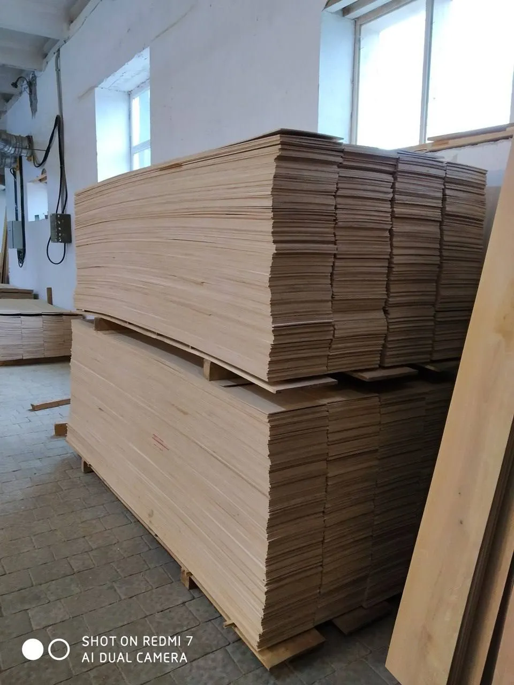

Oak Lamellas from the Manufacturer
Premium-quality oak lamella used in the production of parquet flooring and engineered wood flooring. Manufactured from carefully selected oak timber, it offers precise dimensions, controlled moisture content and consistent quality for modern flooring applications.
Technical Specifications
Technical Specifications
| Parameter | Value |
|---|---|
| Wood Species | Oak |
| Moisture Content | 7 ± 2% |
| Grade | A, B, C, D |
| Thickness | 3,2 - 4,2 mm* |
| Width | 98 - 310 mm* |
| Length | 620 - 2420 mm* |
* Dimensions may vary according to customer requirements.
Photo Gallery

Production Process
The manufacturing process begins with the careful selection of high-quality oak timber, followed by controlled drying to achieve the required moisture content.
The material is then processed using modern woodworking equipment to ensure precise dimensions, accurate geometry and a high-quality surface finish.
Throughout production, each batch undergoes quality control to verify dimensional accuracy, moisture stability and product consistency before being packaged and prepared for further use in flooring production.
← Back to Home